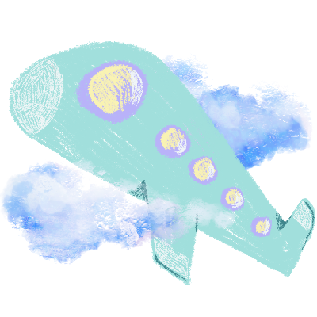
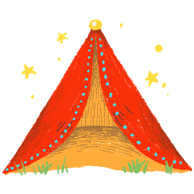
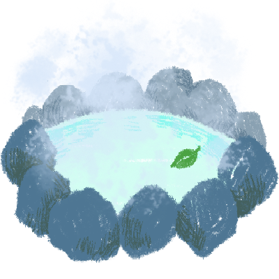
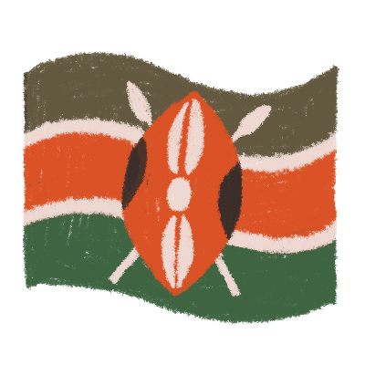

RINO YAMAMOTO
1996年10月29日生まれ。
多摩美術大学卒。
染め物や織物の製作と研究をしていました。
気づいたら何時間もぶっ通しで作業する、スーパーものづくり大好き芸人。
ホテル業、人材コンサル業を経て、より"コミュニティ"を広げ、
繋げることができるWEBデザイナーに可能性を感じ、フェリカへ入校。
職種や地域をとわず、あらゆる分野で活躍する方々と仕事をし、
自分を中心に繋がりの輪を作りたい。
人脈の循環を通して人の生活をより豊かにするデザイナーになるのが目標。
Skill

Visual Studio Code

HTML5

CSS3

JavaScript

Photoshop

Illustrator

Camera

Illust
Hobby

旅行
基本1人のバックパッカースタイルです。約20カ国周って、一番住みたい国はニュージーランドかタイです。

キャンプ
料理よりもテント設営係です。学生時代は月に一度お出かけしていました。

温泉めぐり
とにかく温泉に浸かるのが好きなのですが、あまり詳しくないのでオススメあれば教えてください。今一番行ってみたいのは熊本の黒川温泉です。
アニメ鑑賞
私の日本語と日本文化はアニメから学んだものが多いです。一番初めに知った日本のアニメは「クレヨンしんちゃん」で、今でも年に一度映画を見に行くくらい好きです。
Raised countries

日本
本格的に日本に住み始めたのは高校生の時です。両親は仕事の関係でベトナムを離れられなかったため、ひとりで帰ってきました。渋谷と新宿の乗り換えが地獄でした。
ベトナム
主に小学2年生〜中学3年生まで住んでいました。娯楽という娯楽がないので、夜市やちょっとした路店が日頃の楽しみでした。一番好きな食事は”バインミー”です。

ケニア
幼少期は現地の幼稚園、小学1年生を日本人学校で過ごしました。小1で初めて日本語に触れたため周りと比べて学習進度に大きく差があり、放課後は校長先生とマンツーマンで日本語レッスンをしたのがいい思い出です。そしてサファリは圧巻です。